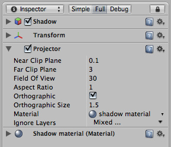

Projector
Projectors allow you to project an arbitrary Material on all objects that intersect its frustum.

The Projector Inspector
The Projector Inspector
Properties
| Near Clip Plane | Objects in front of the near clip plane will not be projected upon. |
| Far Clip Plane | Objects beyond this distance will not be affected. |
| Field Of View | The field of view in degrees. This is only used if the Projector is not Ortho Graphic. |
| Aspect Ratio | The Aspect Ratio of the Projector. This allows you to tune the height vs width of the Projector. |
| Is Ortho Graphic | If enabled, the Projector will be Ortho Graphic instead of perspective. |
| Ortho Graphic Size | The Ortho Graphic size of the Projection. this is only used if Is Ortho Graphic is turned on. |
| Material | The Material that will be Projected onto Objects. |
| Ignore Layers | Objects that are in one of the Ignore Layers will not be affected. By default, Ignore Layers is none so all geometry that intersects the Projector frustum will be affected. |
Details
With a projector you can:
- Create shadows.
- Make a real world projector on a tripod with another Camera that films some other part of the world using a Render Texture.
- Create bullet marks.
- Funky lighting effects.

A Projector is used to create a Blob Shadow for this Robot
If you want to create a simple shadow effect, simply drag the Prefab into your scene. You can modify the Material to use a different Blob shadow texture.
Hints
- Projector Blob shadows can create very impressive Splinter Cell-like lighting effects if used to shadow the environment properly.
- When no Falloff Texture is used in the projector's Material, it can project both forward and backward, creating "double projection". To fix this, use an alpha-only Falloff texture that has a black leftmost pixel column.